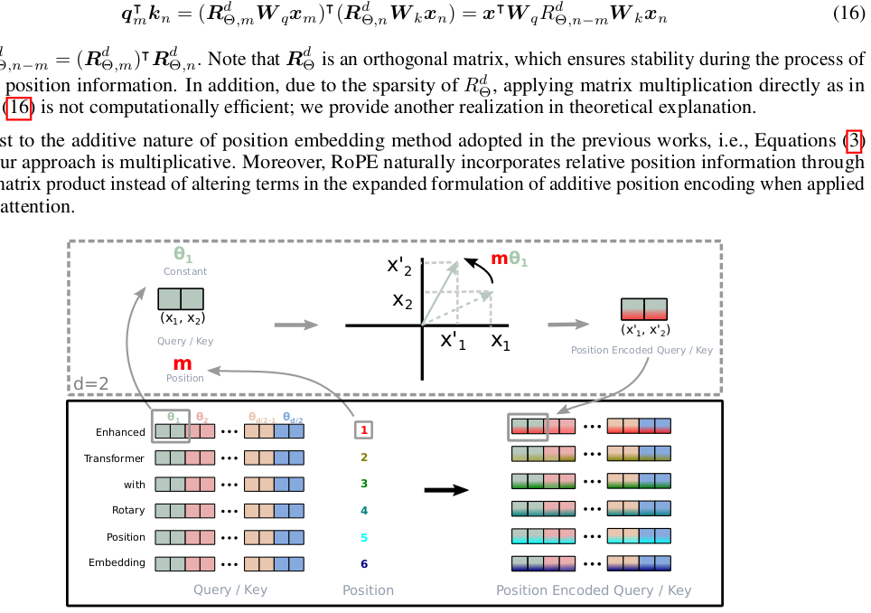
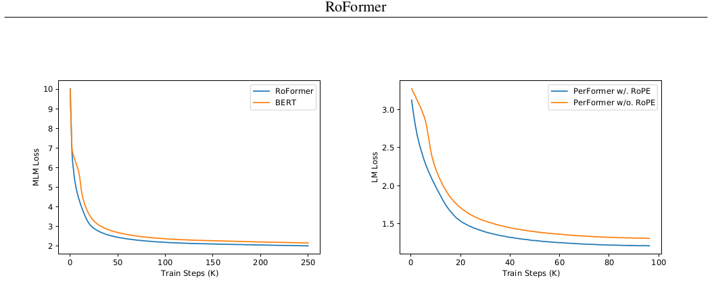

位置编码最近在 Transformer 架构中显示出有效性。它为序列中不同位置元素之间的依赖建模提供了有价值的监督。在本文中，我们首先研究了将位置信息整合到基于 Transformer 的语言模型学习过程中的各种方法。然后，我们提出了一种名为旋转位置嵌入（Rotary Position Embedding，RoPE）的新方法，以有效利用位置信息。具体而言，所提出的 RoPE 用旋转矩阵编码绝对位置，同时在自注意力公式中融入了显式的相对位置依赖。值得注意的是，RoPE 具有一些有价值的性质，包括序列长度的灵活性、随相对距离增加而衰减的 token 间依赖，以及使线性自注意力具备相对位置编码的能力。最后，我们在各种长文本分类基准数据集上评估了带有旋转位置嵌入的增强 Transformer（也称为 RoFormer）。实验表明，它始终优于替代方案。此外，我们提供了理论分析来解释一些实验结果。RoFormer 已集成到 Huggingface：https://huggingface.co/docs/transformers/model_doc/roformer。
关键词：预训练语言模型 · 位置信息编码 · 预训练 · 自然语言处理
词的顺序对于自然语言理解具有重要价值。基于循环神经网络（RNN）的模型通过沿时间维度递归计算隐藏状态来编码 token 的顺序。基于卷积神经网络（CNN）的模型 Gehring et al. [2017] 通常被认为与位置无关，但近期工作 Islam et al. [2020] 表明，常用的填充（padding）操作可以隐式学习位置信息。最近，建立在 Transformer Vaswani et al. [2017] 之上的预训练语言模型（PLM）在各种自然语言处理（NLP）任务上取得了最先进的性能，包括上下文表示学习 Devlin et al. [2019]、机器翻译 Vaswani et al. [2017] 和语言建模 Radford et al. [2019] 等。与基于 RNN 和 CNN 的模型不同，PLM 利用自注意力机制来语义地捕获给定语料库的上下文表示。因此，PLM 在并行化方面相比 RNN 取得了显著改进，并且相比 CNN 提高了对更长 token 内部关系的建模能力1。
值得注意的是，当前 PLM 的自注意力架构已被证明与位置无关 Yun et al. [2020]。根据这一论断，人们提出了各种方法将位置信息编码到学习过程中。一方面，通过预定义函数 Vaswani et al. [2017] 生成的绝对位置编码被加到上下文表示中；而可训练的绝对位置编码 Gehring et al. [2017]、Devlin et al. [2019]、Lan et al. [2020]、Clark et al. [2020]、Radford et al. [2019]、Radford and Narasimhan [2018] 也被采用。另一方面，先前的工作 Parikh et al. [2016]、Shaw et al. [2018]、Huang et al. [2018]、Dai et al. [2019]、Yang et al. [2019]、Raffel et al. [2020]、Ke et al. [2020]、He et al. [2020]、Huang et al. [2020] 关注相对位置编码，通常将相对位置信息编码到注意力机制中。除这些方法外，Liu et al. [2020] 的作者提出从神经 ODE（Neural ODE）Chen et al. [2018a] 的角度建模位置编码的依赖关系，Wang et al. [2020] 的作者提出在复空间中建模位置信息。尽管这些方法有效，但它们通常将位置信息加到上下文表示中，因此不适用于线性自注意力架构。
在本文中，我们引入一种新方法，即旋转位置嵌入（Rotary Position Embedding，RoPE），将位置信息利用到 PLM 的学习过程中。具体而言，RoPE 用旋转矩阵编码绝对位置，同时在自注意力公式中融入显式的相对位置依赖。值得注意的是，所提出的 RoPE 凭借有价值的性质优先于现有方法，包括序列长度灵活性、随相对距离增加而衰减的 token 间依赖，以及使线性自注意力具备相对位置编码的能力。在各种长文本分类基准数据集上的实验结果表明，带有旋转位置嵌入的增强 Transformer（即 RoFormer）相比基线替代方案能给出更好的性能，从而证明了所提出 RoPE 的有效性。
简言之，我们的贡献有三方面：
本文其余部分组织如下。第 2 节建立自注意力架构中位置编码问题的形式化描述，并回顾先前工作。第 3 节描述旋转位置编码（RoPE）并研究其性质。第 4 节报告实验。最后，第 5 节总结全文。
令 \(\mathbb{S}_N=\{w_i\}_{i=1}^N\) 为 \(N\) 个输入 token 的序列，\(w_i\) 为第 \(i\) 个元素。\(\mathbb{S}_N\) 对应的词嵌入记为 \(\mathbb{E}_N=\{x_i\}_{i=1}^N\)，其中 \(x_i\in\mathbb{R}^d\) 是 token \(w_i\) 的 \(d\) 维词嵌入向量，不含位置信息。自注意力首先将位置信息融入词嵌入，并将其转换为查询、键和值表示。
其中 \(\pmb{q}_m,\pmb{k}_n,\pmb{v}_n\) 分别通过 \(f_q,f_k,f_v\) 融入第 \(m\) 和第 \(n\) 个位置。查询和键值随后用于计算注意力权重，输出计算为值表示的加权和。
现有基于 Transformer 的位置编码方法主要关注选择合适的函数来构造式 (1)。
式 (1) 的一个典型选择是
其中 \(\pmb{p}_i\in\mathbb{R}^d\) 是依赖于 token \(\pmb{x}_i\) 位置的 \(d\) 维向量。先前工作 Devlin et al. [2019]、Lan et al. [2020]、Clark et al. [2020]、Radford et al. [2019]、Radford and Narasimhan [2018] 引入了一组可训练向量 \(\pmb{p}_i\in\{\pmb{p}_i\}_{i=1}^L\)，其中 \(L\) 是最大序列长度。Vaswani et al. [2017] 的作者提出使用正弦函数生成 \(\pmb{p}_i\)。
其中 \(\pmb{p}_{i,2t}\) 是 \(d\) 维向量 \(\pmb{p}_i\) 的第 \(2t\) 个元素。下一节我们将表明，从正弦函数角度看，所提出的 RoPE 与这一直觉相关。然而，RoPE 不是直接将位置加到上下文表示中，而是提出通过乘以正弦函数来融入相对位置信息。
Shaw et al. [2018] 的作者对式 (1) 采用了不同设置：
其中 \(\tilde{\pmb{p}}_r^k,\tilde{\pmb{p}}_r^v\in\mathbb{R}^d\) 是可训练的相对位置嵌入。注意 \(r=\mathrm{clip}(m-n,r_{\min},r_{\max})\) 表示位置 \(m\) 和 \(n\) 之间的相对距离。他们裁剪相对距离，假设超过一定距离的精确相对位置信息不再有用。保持式 (3) 的形式，Dai et al. [2019] 的作者提出将式 (2) 中的 \(\pmb{q}_m^T\pmb{k}_n\) 分解为
关键思想是用正弦编码的相对版本 \(\tilde{\pmb{p}}_{m-n}\) 替换绝对位置嵌入 \(\pmb{p}_n\)，同时用两个与查询位置无关的可训练向量 \(\mathbf{u}\) 和 \(\mathbf{v}\) 替换第三、四项中的绝对位置 \(\pmb{p}_m\)。此外，\(\pmb{W}_k\) 对基于内容和基于位置的键向量 \(\pmb{x}_n\) 和 \(\pmb{p}_n\) 分别记为 \(\pmb{W}_k\) 和 \(\widetilde{\pmb{W}}_k\)，得到：
值得注意的是，通过设置 \(f_v(\pmb{x}_j):=\pmb{W}_v\pmb{x}_j\)，值项中的位置信息被移除。后续工作 Raffel et al. [2020]、He et al. [2020]、Ke et al. [2020]、Huang et al. [2020] 遵循这些设置，仅将相对位置信息编码到注意力权重中。然而，Raffel et al. [2020] 的作者将式 (6) 重构为：
其中 \(b_{i,j}\) 是可训练偏置。Ke et al. [2020] 的作者研究了式 (6) 的中间两项，发现绝对位置与词之间几乎没有相关性。Raffel et al. [2020] 的作者提出使用不同投影矩阵建模一对词或位置。
He et al. [2020] 的作者认为，两个 token 的相对位置只能通过式 (6) 的中间两项完全建模。因此，绝对位置嵌入 \(\pmb{p}_m\) 和 \(\pmb{p}_n\) 被简单替换为相对位置嵌入 \(\tilde{\pmb{p}}_{m-n}\)：
对相对位置嵌入四种变体的比较 Radford and Narasimhan [2018] 表明，类似于式 (10) 的变体在其他三种中最有效。总体而言，所有这些方法都试图在式 (2) 的自注意力设置下，基于式 (3) 的分解修改式 (6)，这最初由 Vaswani et al. [2017] 提出。它们通常引入直接将位置信息加到上下文表示中。与它们不同，我们的方法旨在在某些约束下从式 (1) 推导相对位置编码。接下来，我们表明所推导的方法通过用上下文表示的旋转融入相对位置信息而更具可解释性。
本节讨论所提出的旋转位置嵌入（RoPE）。首先在 3.1 节形式化相对位置编码问题，然后在 3.2 节推导 RoPE，并在 3.3 节研究其性质。
基于 Transformer 的语言建模通常通过自注意力机制利用单个 token 的位置信息。从式 (2) 可观察到，\(\pmb{q}_m^{\mathsf{T}}\pmb{k}_n\) 通常使不同位置的 token 之间能够传递知识。为融入相对位置信息，我们要求查询 \(\pmb{q}_m\) 和键 \(\pmb{k}_n\) 的内积由一个函数 \(g\) 表述，该函数仅以词嵌入 \(\pmb{x}_m,\pmb{x}_n\) 及其相对位置 \(m-n\) 为输入变量。换句话说，我们希望内积仅以相对形式编码位置信息：
最终目标是找到一种等价的编码机制，求解函数 \(f_q(\pmb{x}_m,m)\) 和 \(f_k(\pmb{x}_n,n)\)，以符合上述关系。
我们从维度 \(d=2\) 的简单情形开始。在此设置下，利用二维平面上向量的几何性质及其复数形式，可以证明（详见 3.4.1 节）我们形式化式 (11) 的一个解为：
其中 \(\mathrm{Re}[\cdot]\) 是复数的实部，\((\pmb{W}_k\pmb{x}_n)^{*}\) 表示 \((\pmb{W}_k\pmb{x}_n)\) 的共轭复数，\(\theta\in\mathbb{R}\) 是预设的非零常数。我们可以进一步将 \(f_{(q,k)}\) 写成矩阵乘法形式：
其中 \((x_m^{(1)},x_m^{(2)})\) 是 \(\pmb{x}_m\) 在二维坐标中的表示。类似地，\(g\) 可以视为矩阵，从而在二维情形下使 3.1 节的形式化问题有解。具体而言，融入相对位置嵌入很直接：只需将仿射变换后的词嵌入向量旋转其位置索引的角度倍数，这就解释了旋转位置嵌入背后的直觉。
为了将二维结果推广到任意偶数维的 \(\mathbf{x}_i\in\mathbb{R}^d\)，我们将 \(d\) 维空间划分为 \(d/2\) 个子空间，并利用内积的线性性组合它们，将 \(f_{\{q,k\}}\) 变为：
其中
是带有预定义参数 \(\Theta=\{\theta_i=10000^{-2(i-1)/d},i\in[1,2,\dots,d/2]\}\) 的旋转矩阵。RoPE 的图形说明见图 1。将 RoPE 应用于式 (2) 中的自注意力，得到：
其中 \(\pmb{R}_{\Theta,n-m}^d=(\pmb{R}_{\Theta,m}^d)^T\pmb{R}_{\Theta,n}^d\)。注意 \(\pmb{R}_{\Theta,n}^d\) 是正交矩阵，这保证了编码位置信息过程中的稳定性。此外，由于 \(\pmb{R}_{\Theta,n}^d\) 的稀疏性，直接按式 (16) 进行矩阵乘法在计算上并不高效；我们在理论解释中提供了另一种实现。
与先前工作中位置嵌入方法的加法性质（即式 (3) 至 (10)）不同，我们的方法是乘法性的。此外，RoPE 在应用于自注意力时，通过旋转矩阵乘积自然地融入相对位置信息，而不是修改加法位置编码展开式中的项。

长期衰减：遵循 Vaswani et al. [2017]，我们设 \(\theta_i=10000^{-2i/d}\)。可以证明该设置提供了长期衰减性质（详见 3.4.3 节），即内积会随相对位置增加而衰减。这一性质符合直觉：相对距离较远的一对 token 应有较少的联系。
RoPE 与线性注意力：自注意力可以重写为更一般的形式。
原始自注意力选择 \(\mathrm{sim}(\pmb{q}_m,\pmb{k}_n)=\exp(\pmb{q}_m^{\mathrm{T}}\pmb{k}_n/\sqrt{d})\)。注意原始自注意力需要为每对 token 计算查询和键的内积，复杂度为二次 \(\mathbb{O}(N^2)\)。遵循 Katharopoulos et al. [2020]，线性注意力将式 (17) 重新表述为
其中 \(\phi(\cdot),\phi(\cdot)\) 通常是非负函数。Katharopoulos et al. [2020] 的作者提出 \(\phi(x)=\phi(x)=\mathrm{elu}(x)+1\)，并利用矩阵乘法的结合性先计算键和值的乘积。Shen et al. [2021] 使用 softmax 函数在内积之前分别归一化查询和键，等价于 \(\phi(\pmb{q}_i)=\mathrm{softmax}(\pmb{q}_i)\) 和 \(\phi(\pmb{k}_j)=\exp(\pmb{k}_j)\)。关于线性注意力的更多细节，建议读者参阅原始论文。本节重点讨论将 RoPE 与式 (18) 结合。由于 RoPE 通过旋转注入位置信息，保持隐藏表示的范数不变，我们可以通过将旋转矩阵与非负函数输出相乘，将 RoPE 与线性注意力结合。
值得注意的是，我们保持分母不变以避免除以零的风险，分子中的求和可能包含负项。尽管式 (19) 中每个值 \(\pmb{v}_i\) 的权重并非严格概率归一化，但我们谨慎地认为该计算仍能建模值的重要性。
在 \(d=2\) 的情况下，考虑两个词嵌入向量 \(\pmb{x}_q,\pmb{x}_k\) 分别对应查询和键，其位置分别为 \(m\) 和 \(n\)。根据式 (1)，它们的位置编码对应物为：
其中 \(\pmb{q}_m\) 和 \(\pmb{k}_n\) 的下标表示编码的位置信息。假设存在函数 \(g\) 定义 \(f_{\{q,k\}}\) 产生向量之间的内积：
我们进一步要求满足以下初始条件：
这可理解为未编码位置信息的向量。给定这些设置，我们尝试求解 \(f_q,f_k\)。首先利用二维向量的几何意义及其复数对应形式，将式 (20) 和 (21) 中的函数分解为：
其中 \(R_f,R_g\) 和 \(\Theta_f,\Theta_g\) 分别是 \(f_{\{q,k\}}\) 和 \(g\) 的径向和角分量。代入式 (21) 得到关系：
对应的初始条件为：
其中 \(\|\pmb{q}\|,\|\pmb{k}\|\) 和 \(\theta_q,\theta_k\) 是 \(\pmb{q}\) 和 \(\pmb{k}\) 在二维平面上的径向和角分量。
接下来，在式 (24) 中令 \(m=n\)，并考虑式 (25) 的初始条件：
一方面，由式 (26a) 可直接得到 \(R_f\) 的解：
这表明径向函数 \(R_q,R_k,R_g\) 独立于位置信息。另一方面，从式 (26b) 可注意到 \(\Theta_q(\pmb{x}_q,m)-\theta_q=\Theta_k(\pmb{x}_k,m)-\theta_k\)，表明角函数不依赖于查询和键。令 \(\Theta_f:=\Theta_q=\Theta_k\)，且 \(\Theta_f(\pmb{x}_{\{q,k\}},m)-\theta_{\{q,k\}}\) 是位置 \(m\) 的函数且独立于词嵌入 \(\pmb{x}_{\{q,k\}}\)，记为 \(\phi(m)\)，得到：
进一步，将 \(n=m+1\) 代入式 (24) 并考虑上述方程，得到：
由于右侧是与 \(m\) 无关的常数，具有连续整数输入的 \(\phi(m)\) 构成等差数列：
其中 \(\theta,\gamma\in\mathbb{R}\) 是常数，\(\theta\) 非零。总结式 (27) 至 (30) 的解：
注意我们并未对式 (22) 中的 \(f_q,f_k\) 施加任何约束，因此 \(f_q(\pmb{x}_m,0)\) 和 \(f_k(\pmb{x}_n,0)\) 可自由选择。为使结果与式 (3) 可比，定义：
然后简单令式 (31) 中 \(\gamma=0\)，得到最终解：
利用式 (15) 中 \(\pmb{R}_{\Theta,m}^d\) 的稀疏性，\(\pmb{R}_{\Theta}^d\) 与 \(\pmb{x}\in\mathbb{R}^d\) 相乘的一种更高效实现为：
我们可以将向量 \(\pmb{q}=\pmb{W}_q\pmb{x}_m\) 和 \(\pmb{k}=\pmb{W}_k\pmb{x}_n\) 的条目成对分组，式 (16) 中 RoPE 的内积可以写成复数乘法。
其中 \(\pmb{q}_{[2i;2i+1]}\) 表示 \(\pmb{q}\) 的第 \(2i\) 至 \((2i+1)\) 个条目。记 \(h_i=\pmb{q}_{[2i;2i+1]}\pmb{k}_{[2i;2i+1]}^{*}\)，\(S_j=\sum_{i=0}^{j-1}e^{i(m-n)\theta_i}\)，并令 \(h_{d/2}=0\)，\(S_0=0\)，可用 Abel 变换重写求和：
因此，
注意，通过设置 \(\theta_i=10000^{-2i/d}\)，\(\frac{1}{d/2}\sum_{i=1}^{d/2}|S_i|\) 的值随相对距离 \(m-n\) 增加而衰减，如图 2 所示。
我们在各种 NLP 任务上评估所提出的 RoFormer。首先在机器翻译任务上验证所提出解决方案的性能（4.1 节）。然后，在预训练阶段将我们的 RoPE 实现与 BERT Devlin et al. [2019] 进行比较（4.2 节）。基于预训练模型，在 4.3 节进一步在 GLUE 基准 Singh et al. [2018] 的不同下游任务上进行评估。此外，在 4.4 节使用 PerFormer Choromanski et al. [2020] 的线性注意力进行 RoPE 实验。最后，4.5 节包含中文数据的额外测试。所有实验均在配备 4 块 V100 GPU 的两台云服务器上运行。
首先展示 RoFormer 在序列到序列语言翻译任务上的性能。
我们选择标准的 WMT 2014 英德数据集 Bojar et al. [2014]，约包含 450 万句对。与基于 Transformer 的基线 Vaswani et al. [2017] 进行比较。
我们对基线模型 Vaswani et al. [2017] 的自注意力层进行一些修改，使 RoPE 能融入其学习过程。我们复现英德翻译设置，使用基于联合源目标字节对编码（BPE）Sennrich et al. [2015] 的 37k 词表。评估时，通过对最后 5 个检查点取平均获得单个模型。结果使用束大小 4、长度惩罚 0.6 的束搜索。我们在 fairseq 工具包（MIT 许可证）Ott et al. [2019] 的 PyTorch 中实现实验。模型使用 Adam 优化器，\(\beta_1=0.9\)，\(\beta_2=0.98\)，学习率从 \(1e-7\) 线性增加到 \(5e-4\)，然后按步数平方根倒数成比例衰减。还采用 0.1 的标签平滑。我们报告测试集上的 BLEU Papineni et al. [2002] 分数作为最终指标。
我们在相同设置下训练基线模型和 RoFormer，结果见表 1。可以看出，我们的模型相比基线 Transformer 给出更好的 BLEU 分数。
| 模型 | BLEU |
|---|---|
| Transformer-base Vaswani et al. [2017] | 27.3 |
| RoFormer | 27.5 |
第二个实验验证我们的提案在学习上下文表示方面的性能。为此，在预训练阶段用 RoPE 替换 BERT 原始的正弦位置编码。
使用 BookCorpus Zhu et al. [2015] 和 Huggingface Datasets 库（Apache License 2.0）中的 Wikipedia 语料 Foundation [2021] 进行预训练。语料按 8:2 比例划分为训练集和验证集。我们使用训练过程中的掩码语言建模（MLM）损失值作为评估指标。采用著名的 BERT Devlin et al. [2019] 作为基线模型。注意实验中使用 bert-base-uncased。
对于 RoFormer，我们将基线模型自注意力块中的正弦位置编码替换为所提出的 RoPE，并根据式 (16) 实现自注意力。BERT 和 RoFormer 均以批量大小 64、最大序列长度 512 训练 100k 步。使用 AdamW Loshchilov and Hutter [2017] 作为优化器，学习率 1e-5。
预训练期间的 MLM 损失见图 3 左图。与原始 BERT 相比，RoFormer 收敛更快。

与先前实验一致，我们在各种 GLUE 任务上微调预训练 RoFormer 的权重，以评估其在下游 NLP 任务上的泛化能力。
我们考察 GLUE 中的几个数据集，即 MRPC Dolan and Brockett [2005]、SST-2 Socher et al. [2013]、QNLI Rajpurkar et al. [2016]、STS-B Al-Natsheh [2017]、QQP Chen et al. [2018b] 和 MNLI Williams et al. [2018]。MRPC 和 QQP 使用 F1 分数，STS-B 使用 Spearman 相关系数，其余使用准确率作为评估指标。
使用 Huggingface Transformers 库（Apache License 2.0）Wolf et al. [2020] 对上述下游任务各微调 3 个 epoch，最大序列长度 512，批量大小 32，学习率 2、3、4、5e-5。遵循 Devlin et al. [2019]，我们报告验证集上的最佳平均结果。
| 模型 | MRPC | SST-2 | QNLI | STS-B | QQP | MNLI (m/mm) |
|---|---|---|---|---|---|---|
| BERT Devlin et al. [2019] | 88.9 | 93.5 | 90.5 | 85.8 | 71.2 | 84.6/83.4 |
| RoFormer | 89.5 | 90.7 | 88.0 | 87.0 | 86.4 | 80.2/79.8 |
微调任务的评估结果见表 2。可以看出，RoFormer 在六个数据集中的三个上显著优于 BERT，改进相当可观。
Performer Choromanski et al. [2020] 引入了一种替代注意力机制——线性注意力，旨在避免随输入序列长度增长的二次计算成本。如 3.3 节所述，所提出的 RoPE 可以很容易地在 PerFormer 模型中实现相对位置编码，同时保持自注意力的线性缩放复杂度。我们通过语言建模的预训练任务展示其性能。
我们在 Enwik8 数据集 Mahoney [2006] 上进行测试，该数据集来自英文维基百科，除英文文本外还包括标记、特殊字符和其他语言文本。我们将 RoPE 融入 12 层、768 维、12 头的基于字符的 PerFormer。为更好说明 RoPE 的有效性，我们报告相同设置（即学习率 1e-4、批量大小 128、固定最大序列长度 1024 等）下带和不带 RoPE 的预训练损失曲线。
如图 3 右图所示，在相同训练步数下，将 RoPE 替换进 Performer 可带来更快收敛和更低损失。这些改进加上线性复杂度，使 Performer 更具吸引力。
除英文数据实验外，我们还展示中文数据的额外结果。为验证 RoFormer 在长文本上的性能，我们在长度超过 512 个字符的长文档上进行实验。
在这些实验中，我们对 WoBERT Su [2020] 进行一些修改，将绝对位置嵌入替换为所提出的 RoPE。作为与中文其他预训练 Transformer 模型（即 BERT Devlin et al. [2019]、WoBERT Su [2020] 和 NEZHA Wei et al. [2019]）的交叉比较，我们在表 3 中列出它们的 tokenization 级别和位置嵌入信息。
| 模型 | BERT Devlin et al. [2019] | WoBERT Su [2020] | NEZHA Wei et al. [2019] | RoFormer |
|---|---|---|---|---|
| Tokenization 级别 | char | word | char | word |
| 位置嵌入 | abs. | abs. | rel. | RoPE |
我们在从中文维基百科、新闻和论坛收集的约 34GB 数据上预训练 RoFormer。预训练分多个阶段进行，改变批量大小和最大输入序列长度，以使模型适应各种场景。如表 4 所示，RoFormer 的准确率随序列长度上限增加而提升，这证明了 RoFormer 处理长文本的能力。我们认为这归因于所提出 RoPE 出色的泛化性。
| 阶段 | 最大序列长度 | 批量大小 | 训练步数 | 损失 | 准确率 |
|---|---|---|---|---|---|
| 1 | 512 | 256 | 200k | 1.73 | 65.0% |
| 2 | 1536 | 256 | 12.5k | 1.61 | 66.8% |
| 3 | 256 | 256 | 120k | 1.75 | 64.6% |
| 4 | 128 | 512 | 80k | 1.83 | 63.4% |
| 5 | 1536 | 256 | 10k | 1.58 | 67.4% |
| 6 | 512 | 512 | 30k | 1.66 | 66.2% |
我们选择中国人工智能与法律 2019 相似案例匹配（CAIL2019-SCM）Xiao et al. [2019] 数据集来说明 RoFormer 处理长文本的能力，即语义文本匹配。CAIL2019-SCM 包含 8964 个三元组……
（原文此处内容不完整，后续内容未提供。）
J. Devlin, Ming-Wei Chang, Kenton Lee, and Kristina Toutanova. Bert: Pre-training of deep bidirectional transformers for language understanding. In NAACL-HLT, 2019.
A. Radford, Jeffrey Wu, R. Child, David Luan, Dario Amodei, and Ilya Sutskever. Language models are unsupervised multitask learners. 2019.
Chulhee Yun, Srinadh Bhojanapalli, Ankit Singh Rawat, Sashank Reddi, and Sanjiv Kumar. Are transformers universal approximators of sequence-to-sequence functions? In International Conference on Learning Representations, 2020.
Zhenzhong Lan, Mingda Chen, Sebastian Goodman, Kevin Gimpel, Piyush Sharma, and Radu Soricut. Albert: A lite bert for self-supervised learning of language representations. In International Conference on Learning Representations, 2020.
Kevin Clark, Minh-Thang Luong, Quoc V. Le, and Christopher D. Manning. ELECTRA: Pre-training text encoders as discriminators rather than generators. In ICLR, 2020.
A. Radford and Karthik Narasimhan. Improving language understanding by generative pre-training. 2018.
Ankur P. Parikh, Oscar Tackström, Dipanjan Das, and Jakob Uszkoreit. A decomposable attention model for natural language inference. In EMNLP, 2016.
Peter Shaw, Jakob Uszkoreit, and Ashish Vaswani. Self-attention with relative position representations. In NAACL-HLT, 2018.
Cheng-Zhi Anna Huang, Ashish Vaswani, Jakob Uszkoreit, Noam Shazeer, I. Simon, C. Hawthorne, Andrew M. Dai, M. Hoffman, M. Dinculescu, and D. Eck. Music transformer. arXiv: Learning, 2018.
Zihang Dai, Z. Yang, Yiming Yang, J. Carbonell, Quoc V. Le, and R. Salakhutdinov. Transformer-xl: Attentive language models beyond a fixed-length context. In ACL, 2019.
Z. Yang, Zihang Dai, Yiming Yang, J. Carbonell, R. Salakhutdinov, and Quoc V. Le. Xlnet: Generalized autoregressive pretraining for language understanding. In NeurIPS, 2019.
Colin Raffel, Noam Shazeer, Adam Roberts, Katherine Lee, Sharan Narang, Michael Matena, Yanqi Zhou, W. Li, and Peter J. Liu. Exploring the limits of transfer learning with a unified text-to-text transformer. J. Mach. Learn. Res., 21:140:1–140:67, 2020.
Guolin Ke, Di He, and T. Liu. Rethinking positional encoding in language pre-training. ArXiv, abs/2006.15595, 2020.
Pengcheng He, Xiaodong Liu, Jianfeng Gao, and Weizhu Chen. Deberta: Decoding-enhanced bert with disentangled attention. ArXiv, abs/2006.03654, 2020.
Zhiheng Huang, Davis Liang, Peng Xu, and Bing Xiang. Improve transformer models with better relative position embeddings. In Findings of the Association for Computational Linguistics: EMNLP 2020, pages 3327–3335, Online, November 2020. Association for Computational Linguistics.
Xuanqing Liu, Hsiang-Fu Yu, Inderjit S. Dhillon, and Cho-Jui Hsieh. Learning to encode position for transformer with continuous dynamical model. In Proceedings of the 37th International Conference on Machine Learning, ICML 2020, volume 119, pages 6327–6335. PMLR, 2020.
Tian Qi Chen, Yulia Rubanova, Jesse Bettencourt, and David Duvenaud. Neural ordinary differential equations. In NeurIPS 2018, pages 6572–6583, 2018a.
Benyou Wang, Donghao Zhao, Christina Lioma, Qiuchi Li, Peng Zhang, and Jakob Grue Simonsen. Encoding word order in complex embeddings. In International Conference on Learning Representations, 2020.
Angelos Katharopoulos, Apoorv Vyas, Nikolaos Pappas, and François Fleuret. Transformers are rnns: Fast autoregressive transformers with linear attention. In International Conference on Machine Learning, pages 5156–5165. PMLR, 2020.
Zhuoran Shen, Mingyuan Zhang, Haiyu Zhao, Shuai Yi, and Hongsheng Li. Efficient attention: Attention with linear complexities. In Proceedings of the IEEE/CVF Winter Conference on Applications of Computer Vision, pages 3531–3539, 2021.
Rico Sennrich, Barry Haddow, and Alexandra Birch. Neural machine translation of rare words with subword units. 08 2015.
Myle Ott, Sergey Edunov, Alexei Baevski, Angela Fan, Sam Gross, Nathan Ng, David Grangier, and Michael Auli. fairseq: A fast, extensible toolkit for sequence modeling. pages 48–53, 01 2019.
Kishore Papineni, Salim Roukos, Todd Ward, and Wei Jing Zhu. Bleu: a method for automatic evaluation of machine translation. 10 2002.
Yukun Zhu, Ryan Kiros, Richard Zemel, Ruslan Salakhutdinov, Raquel Urtasun, Antonio Torralba, and Sanja Fidler. Aligning books and movies: Towards story-like visual explanations by watching movies and reading books. In arXiv preprint arXiv:1506.06724, 2015.
Wikimedia Foundation. Wikimedia downloads, https://dumps.wikimedia.org, 2021.
Ilya Loshchilov and Frank Hutter. Decoupled Weight Decay Regularization. arXiv e-prints, art. arXiv:1711.05101, November 2017.
William B. Dolan and Chris Brockett. Automatically constructing a corpus of sentential paraphrases. In Proceedings of the Third International Workshop on Paraphrasing (IWP2005), 2005.
Richard Socher, A. Perelygin, J.Y. Wu, J. Chuang, C.D. Manning, A.Y. Ng, and C. Potts. Recursive deep models for semantic compositionality over a sentiment treebank. EMNLP, 1631:1631–1642, 01 2013.
Pranav Rajpurkar, Jian Zhang, Konstantin Lopyrev, and Percy Liang. Squad: 100,000+ questions for machine comprehension of text. pages 2383–2392, 01 2016.
Hussein Al-Natsheh. Udl at semeval-2017 task 1: Semantic textual similarity estimation of english sentence pairs using regression model over pairwise features. 08 2017.
Z. Chen, H. Zhang, and L. Zhang, X.and Zhao. Quora question pairs., 2018b.
Adina Williams, Nikita Nangia, and Samuel Bowman. A broad-coverage challenge corpus for sentence understanding through inference. pages 1112–1122, 01 2018.
Thomas Wolf, Lysandre Debut, Victor Sanh, Julien Chaumond, Clement Delangue, Anthony Moi, Pierric Cistac, Tim Rault, Rémi Louf, Morgan Funtowicz, Joe Davison, Sam Shleifer, Patrick von Platen, Clara Ma, Yacine Jernite, Julien Plu, Canwen Xu, Teven Le Scao, Sylvain Gugger, Mariama Drame, Quentin Lhoest, and Alexander M. Rush. Transformers: State-of-the-art natural language processing. In Proceedings of the 2020 Conference on Empirical Methods in Natural Language Processing: System Demonstrations, pages 38–45, Online, October 2020. Association for Computational Linguistics.
Matt Mahoney. Large text compression benchmark, http://www.mattmahoney.net/dc/text.html, 2006.
Jianlin Su. Wobert: Word-based chinese bert model - zhuiyiai. Technical report, 2020.
Victor Junqiu Wei, Xiaozhe Ren, Xiaoguang Li, Wenyong Huang, Yi Liao, Yasheng Wang, Jiashu Lin, Xin Jiang, Xiao Chen, and Qun Liu. Nezha: Neural contextualized representation for chinese language understanding. 08 2019.
Chaojun Xiao, Haoxi Zhong, Zhipeng Guo, Cunchao Tu, Zhiyuan Liu, Maosong Sun, Tianyang Zhang, Xianpei Han, Zhen hu, Heng Wang, and Jianfeng Xu. Cail2019-scm: A dataset of similar case matching in legal domain. 11 2019.
说明：本文档为所提供 PDF 内容的中文翻译版；参考文献保留英文原样。原文图已按英文本裁切嵌入。原文表格 OCR 存在少量错位，已按可读内容整理；4.5.3 节原文内容在提供文本中截断，已按原文标注。公式编号按原文保留。